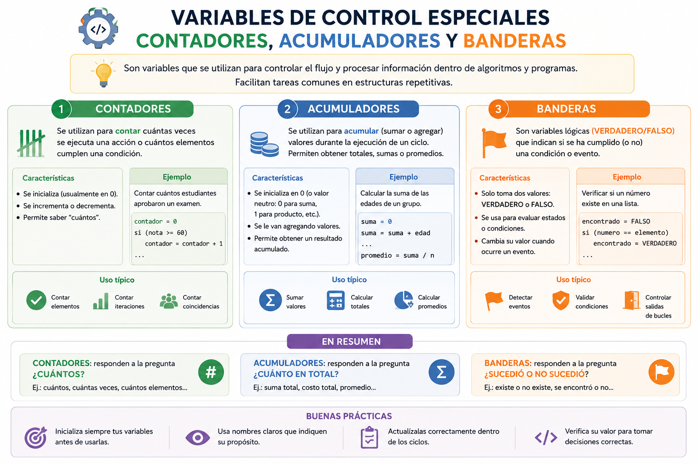

En el panel de control de una estación de carga de vehículos eléctricos ocurren tres cosas al mismo tiempo: el sistema registra de uno en uno cuántos autos han ingresado hoy (Contador); va sumando los Kilovatios-hora totales consumidos por todos ellos para calcular la factura global (Acumulador); y mantiene un indicador luminoso encendido mientras la estación tenga energía y se apaga de inmediato si ocurre una falla crítica (Bandera). Estos tres elementos son variables especiales que controlan y miden el comportamiento de cualquier bucle o sistema automatizado.
⚠️ Debes visualizar el video completo sin adelantar para desbloquear la evaluación.
Material audiovisual adaptado con fines estrictamente educativos. Créditos del autor: SEFER educacion.

En la programación iterativa y lógica, existen variables encargadas de rastrear el estado interno, realizar conteos específicos o acumular resultados parciales producidos dentro de las estructuras cíclicas.
¿Cuál es la función principal de una variable de tipo Contador?
¿Qué caracteriza a un Acumulador a diferencia de un Contador?
¿Qué tipo de valor almacena una variable tipo Bandera (Flag)?
¿Por qué es obligatorio inicializar los contadores y acumuladores antes de iniciar un bucle?
¿Cuál de las siguientes líneas de código representa la sintaxis correcta de un contador?
¿Cuál de las siguientes líneas representa de forma idónea la acción de un acumulador de sueldos?
En el contexto de aplicación real del auto eléctrico, ¿qué elemento opera como la Bandera?
Si una bandera cambia su estado a Falso dentro del ciclo, ¿para qué se suele usar esta alteración?
Si inicializas un contador en 10 y en cada vuelta ejecutas `c <- c - 1`, ¿qué tipo de conteo realizas?
¿Qué ocurriría si un acumulador dentro de un bucle repite su ciclo pero no fue inicializado externamente?